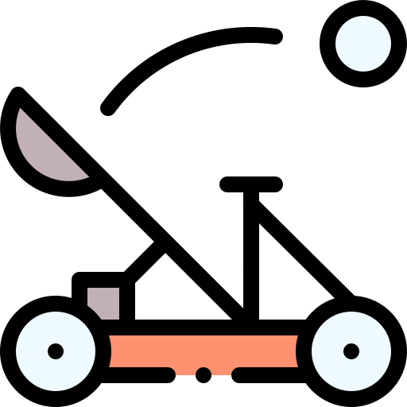
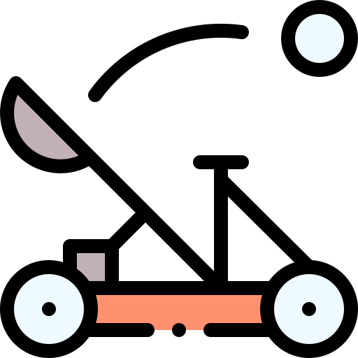

Objectiu
| El principal objetivo de este proyecto es hacer una catapulta con las instrucciones y el material que nos dan |  | Tambien, hemos de hacer un video donde salgan las dos catapultas. Y estudiaremos los tiros parabolicos. |
| El principal objetivo de este proyecto es hacer una catapulta con las instrucciones y el material que nos dan |  | Tambien, hemos de hacer un video donde salgan las dos catapultas. Y estudiaremos los tiros parabolicos. |